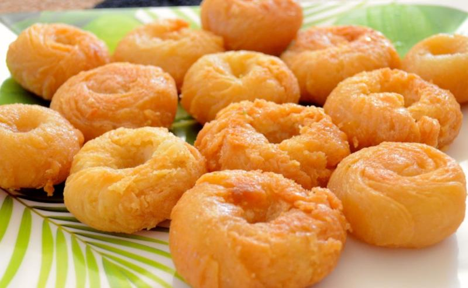

 A sweet, porous flour cup, enclosing a litany of flavours in the Khoya inside – that’s the Bihari food dish, the Balushahi for you. Every time you bite into one, you don’t just taste a sweet. You taste the love of the wonder, that is the food of Bihar. The sweet is filled with mildly sweetened khoya and spices like cardamom and cinnamon, sometimes even flavoured with the opulent saffron for added taste and fragrance. The flour bowl is then closed and deep fried until perfection.